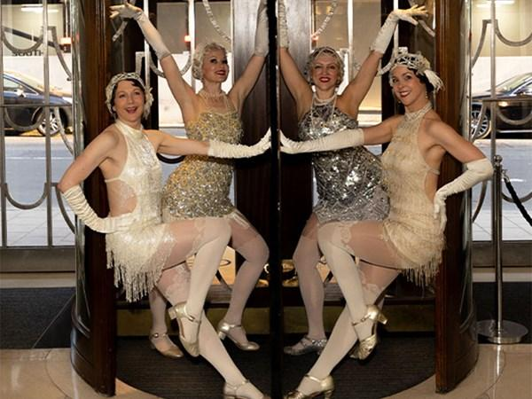
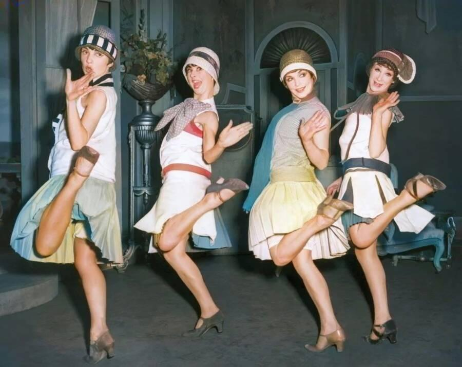
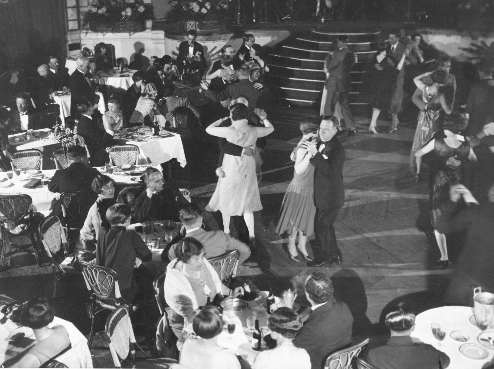
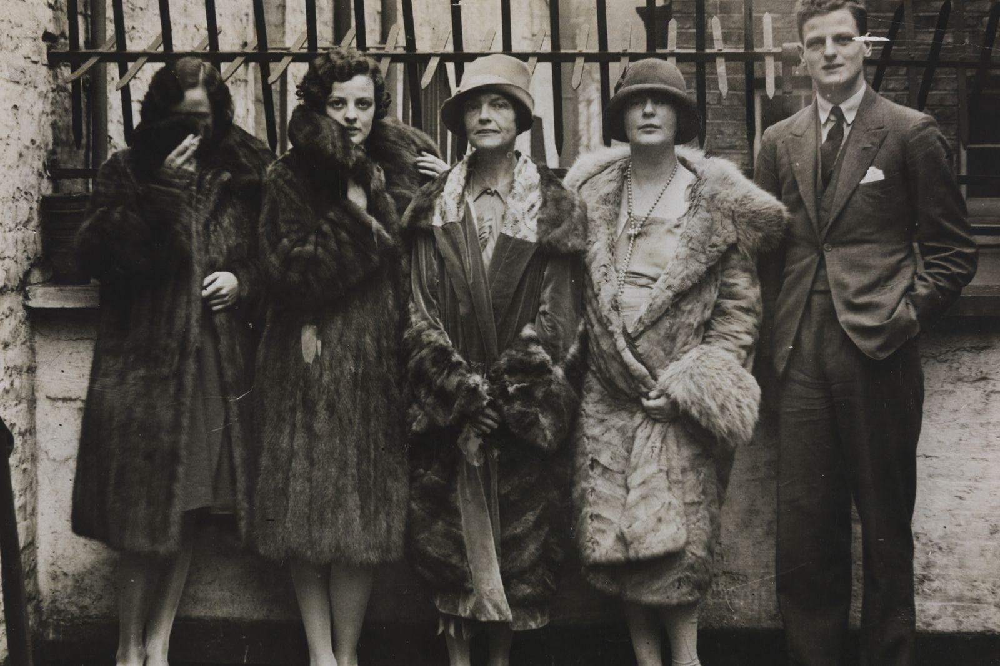
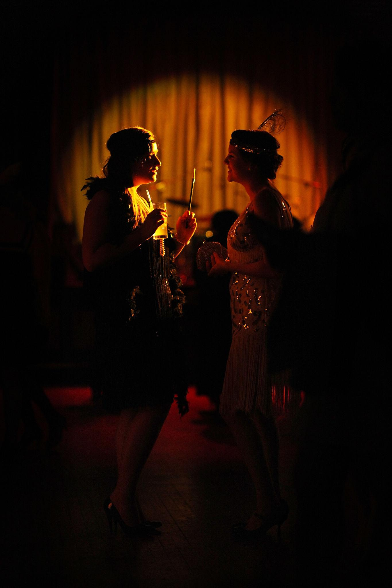
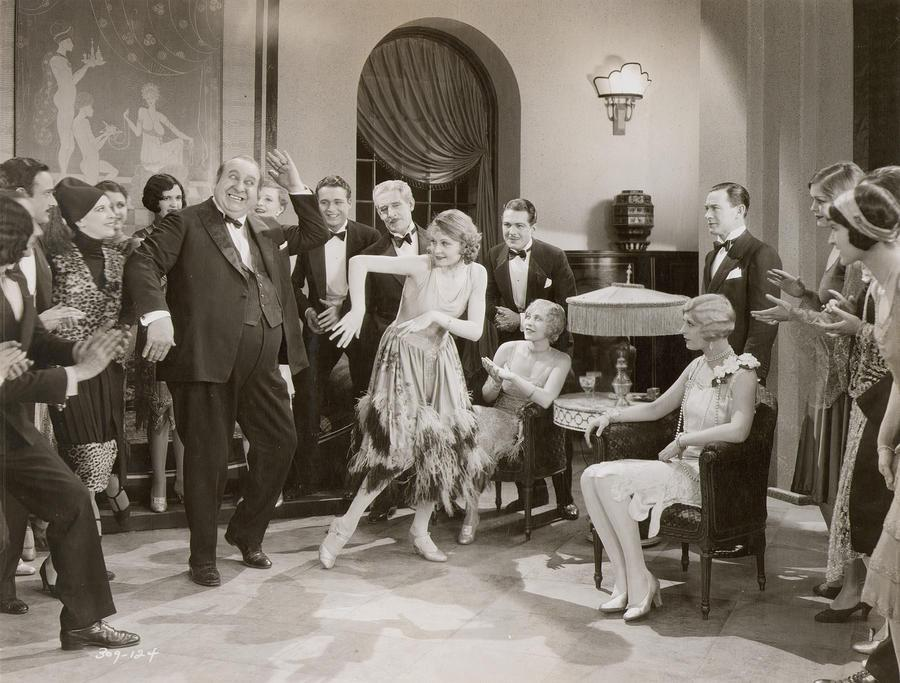
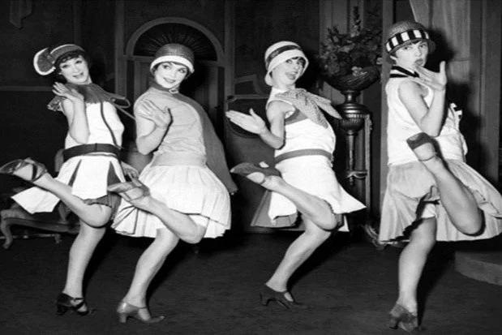
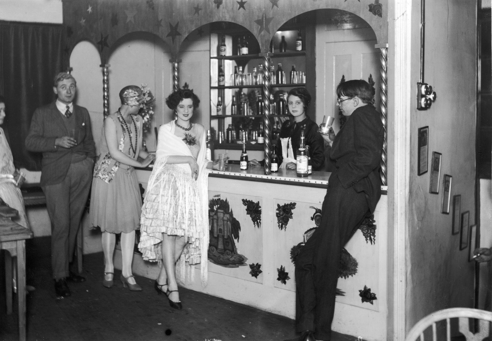
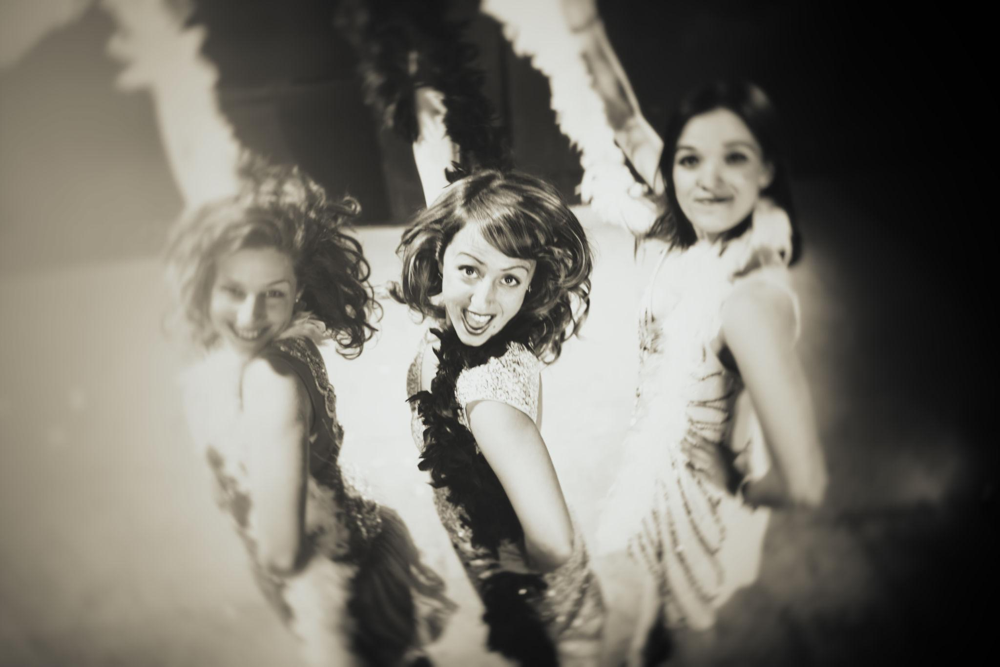

London, late 1920s — Bertie attempts the Charleston
The room is determined to be modern.
Not entirely successful—but determined.
You’re somewhere in Mayfair, in a club that has decided—quite firmly—that London will not be left behind by New York City or Paris. The band is playing something recognizably American, though slightly tidied up at the edges.
At the center of it, trying to look as if this were all perfectly natural:
Bertie Wooster
The setup
His friends—decidedly more competent—have already taken to the floor.
Flappers, or the London version of them:
Shorter dresses (though not quite as daring as Paris)
Fringe that moves when they do
Headbands, beads, a kind of deliberate looseness
They understand the rhythm.
Bertie does not.
The Charleston begins
The band kicks into it—brighter than anything London produced a few years earlier.
Steps that look simple—until attempted:
Feet kicking forward, then back
Knees turning in, then out
Arms doing something that seems obvious until it isn’t
Bertie commits, which is the problem.
The movement
He’s half a beat behind almost immediately.
Not disastrously—just enough to be noticeable to anyone who’s watching carefully, which, unfortunately, is everyone within a ten-foot radius.
His partner adjusts—subtly at first, then more actively:
Guiding timing
Containing excess enthusiasm
Preventing what might become a collapse of structure
The room
Unlike Harlem or Berlin, the energy here is managed.
People are enjoying themselves—but within limits:
Laughter is controlled
Movements are expressive, but not abandon
Even the wildest dancer remains aware of being observed
This is modernity with supervision.
The social layer
What’s happening isn’t just dancing—it’s adoption.
London is importing:
American rhythm
American looseness
American speed
But filtering it through:
Class awareness
Social restraint
A need not to appear entirely unhinged
So the Charleston becomes something slightly different:
Less explosive. More contained. Slightly ironic.
Bertie’s moment
For a brief stretch—just a few bars—he gets it.
The timing locks. The steps land. The room aligns.
Then he overcorrects.
A kick too high. A turn too eager. The rhythm slips again.
His partner rescues the situation with practiced grace.
What you notice
No one stops him. No one openly mocks him.
But there’s a shared understanding:
This is new
This is slightly absurd
This is also, somehow, necessary
The feeling of the night
If Harlem is kinetic and Berlin is sharp, London is:
Trying to be modern while remaining itself
And that tension produces its own kind of comedy.
What lingers
When the music ends, there’s applause—not just for the band, but for the effort of it all.
Bertie returns to the table, convinced he’s acquitted himself well.
No one corrects him.
Which is, in its own way, the most London outcome possible.
If you want, we can bring in Jeeves observing from the edge—that adds another layer of commentary without breaking the tone.
London, late 1920s — when the Americans arrive
The room is already in motion—politely so.
Bertie Wooster has just returned to his table, satisfied with a performance that no one will discuss too closely.
The band resets. Glasses are refilled. The Charleston resumes at a respectable intensity.
Then the door opens.
The entrance
They don’t hesitate.
Lorelei Lee and Dorothy Shaw enter as if the room has been waiting for them specifically.
American, unmistakably.
Not louder—but more certain.
They take in the space in a single glance:
The band (adequate)
The dancers (trying)
The energy (recoverable)
The shift begins
They don’t announce themselves. They move.
Out onto the floor—not asking, not negotiating space. The crowd parts just enough.
The band senses it before the room does. Tempo lifts. Rhythm sharpens.
The dancing
What they’re doing isn’t technically different.
It’s how they’re doing it.
Faster transitions
Cleaner timing
No hesitation between steps
Where London dancers interpret the Charleston, they inhabit it.
Feet snap forward and back with precision. Knees turn sharply. Arms aren’t decorative—they punctuate.
They’re not performing for the room.
They’re performing through it.
The reaction
You feel it before you name it.
The room tightens, then leans in.
Some try to match the tempo—and fail
Some step back, choosing observation over participation
Some laugh, but not dismissively—more in recognition
This is what the dance is supposed to look like.
Bertie observes
At the table, Bertie watches with admiration he won’t fully articulate.
He senses the difference:
Not just skill
Not just confidence
But a lack of self-consciousness that London hasn’t quite allowed itself yet.
The social effect
They move easily between tables.
Conversation follows them:
Quick, bright, slightly irreverent
No deference to hierarchy, only to charm
They’re “wonderful company” in the way that:
They listen just enough
They respond just quickly enough
They never let the energy drop
Men feel included. Women feel challenged—but not excluded.
The deeper shift
What they bring isn’t just better dancing.
It’s a different relationship to the night:
Less observation
More participation
Less concern about how it looks
More focus on how it feels
And that unsettles the room—in a productive way.
The band rises to it
The musicians push harder now.
The rhythm tightens. The sound brightens. For a moment, London stops moderating itself.
The room almost becomes something else.
What lingers
When the set ends, the applause is sharper, more immediate.
Something has been demonstrated—not explained.
The feeling to carry
As the night continues, you realize:
London doesn’t lack modernity.It lacks permission.
And for a few minutes, that permission was supplied—from across the Atlantic.